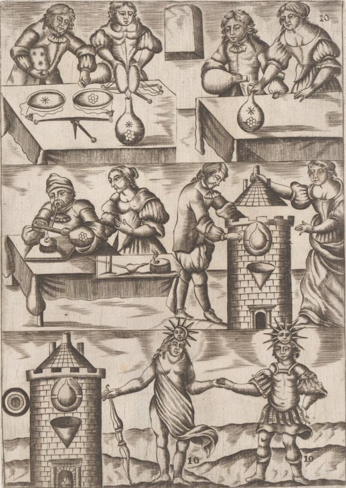

Le tartre vitriolé
ou
l'Arcanum duplicatum

revu le 10 janvier 2002
Plan : 1. Introduction - 2. Le sel polycresteàcalcination du vitriol - salpêtre - eau-forte - cours de Lemery - cours de Lefèvre - cours de Sénac - cours de Glaser - Caput mortuum - foie de soufre - magistère de tartre - 3. Arcanum duplicatum - 4. le tartre [a- introduction - b- crème de tartre - c- alkali fixe du tartre - d- préparations de l'Arcanum - e- terre foliée de tartre ]
lexique : minéralisateurs - sulfates - Berthier (Pierre) - Ebelmen (Jean-Jacques) - Gaudin (Marc-Antoine) - Moissan (Henri) - atinckar - tartre vitriolé (2,3,4,5, ) - Lion vert - polycreste (sel) - vitriol vert - colcothar - salpêtre - écume - noire (couleur) - Djabir (Geber) - Albert le Grand - Composé des composés - eau-forte - polycreste (sel2) - Seignette (sel de) - fondant - Mutus Liber - Aigles - Glaser - polycreste (sel3) - alkali fixe - duobus (sel de) - Arcanum duplicatum - Glaser (Christophle) - caput (1,2) - Femme (sans tête) - résidu - dragon - foie de soufre - Magistère (de tartre) - tartre (9,10,11, ) - Arcanum - sulfate de potasse - phosphorescente (lumière) - oxyde - Debray (Henri) - Frémy (Edmond) - Rouelle (le Jeune) - crème de tartre (2,3, ) - flux noir - flux blanc - tartre (sel fixe de) (1) - Montet - Borée - chaux (de plomb) - craie () - alun (1) - Baumé (Antoine) - argile - gypse -
Précisons d'abord que nous ne parlons ici que de la voie sèche. Nous avons vu dans les autres sections que le seul moyen d'obtenir des corps cristallisés était de disposer d'agents minéralisateurs qui agissaient comme des sortes de catalyseurs. Les problèmes à résoudre sont nombreux :
1)- quels sont les corps permettant d'obtenir, à partir de sulfates des chaux métalliques ?
2)- ces corps sont-ils compatibles avec ceux que pouvaient utiliser les alchimistes, compte tenu de leurs connaissances ?
3)- quelle est la faisabilité de ce type d'opérations ?A la question 1), nous pouvons répondre que ces agents minéralisateurs constituent ce que les anciens alchimistes, mais aussi Fulcanelli et E. Cansdliet au XXe siècle, nommaient le Mercure philosophique. Ce Mercure était leur argent-vif [par jeu de mots avec vif-argent, ce qui a fait travailler de nombreux artisans avec le sublimé corrosif] ; cette substance était capable de dissoudre des chaux métalliques puis, en s'évaporant, de les faire cristalliser ensemble : c'est le résultat de cette cristallisation qui s'appelait la Pierre philosophale ; nous disons « s'appelait » car il clair à présent que les temps sont révolus. Avec les beaux travaux des minéralogistes français du XIXe siècle [nous voulons évoquer ici surtout les figures de Pierre Berthier, Jacques-Joseph Ebelmen, Marc-AntoineGaudin, Moissan et quelques autres], c'est 2000 ans de philosophie hermétique qui se sont écroulés. Seuls de leur espèce au XXe siècle, Fulcanelli et E. Canseliet surent retrouver par une poésie rare et une érudition consommée, la science des Anciens, en faisant parler l'argot aux livres de pierre et aux tableaux lapidaires des cathédrales et des châteaux. Fulcanelli précise :
"L'argot reste le langage d'une minorité d'individus vivant en dehors des lois reçues, des conventions, des usages, du protocole, auxquels on applique l'épithète de voyous, c'est-à-dire de voyants, et celle, plus expressive encore, de Fils ou enfants du soleil..."
A la question 2), nous répondrons que la voie sèche pose moins de problèmes et soulève moins de questions que la voie humide, celle-ci ne nous étant encore connue que de façon indirecte. Disons que par la voie sèche, trois options s'offrent à l'alchimiste. Tandis que la voie humide semble ne laisser d'autre alternative que les dissolutions auriques par l'usage des chlorures d'étain. Voici les options de la voie sèche :
-la voie des alcalis fixes [cf. section sur le Bain des Astres] ;
-la voie de l'atinckar
-la voie du tartre vitriolé.
Cette troisième voie, dont nous n'avons fait que défricher les rudiments dans la section consacrée au Mercure, c'est celle qui fera l'objet de notre propos. C'est une très ancienne voie qui met en jeu un corps que les chimistes connaissent bien, encore qu'ils le rejettent habituellement, nous dit E. Canseliet, comme un résidu misérable alors qu'il est précieux pour l'alchimiste. Certains Adeptes l'ont nommé vitriol vert, pour déceler sa nature chaude, ardente et saline. C'est le Lion vert de Ripley et celui dont nous parle le Cosmopolite :
"Il y a ce seul Lion verd qui ferme et ouvre les sept sceaux indissolubles des sept esprits métalliques, et qui tourmente les corps jusqu'à ce qu'il les ait entièrement perfectionnés, par le moyen d'une longue et ferme patience de l"artiste" [Les Mystères, p. 184]
Ce n'est point autrement que travaillaient les minéralogistes qui ont réussi les synthèses des gemmes orientales. Il a été vraiment dommage pour la science qu'un savant aussi compétent que J.J. Ebelmen ait disparu si tôt, alors qu'il était sur le point de découvrir le secret de la synthèse de « nature » de toutes les gemmes précieuses...Poursuivons.
2)- Le sel polycreste
C'est donc de vitriols qu'il va être question ici : dans son Cours de Chymie [Paris, 1675], Nicolas Lemery reconnait quatre vitriols, substances composées d'un sel acide et d'une terre sulfureuse. Il distingue le vitriol bleu, le vert, le blanc et le rouge. Le vitriol bleu, nous le savons maintenant, est du sulfate de cuivre ; on l'appelle aussi vitriol de Chypre, couperose bleue. En europe, le vitriol bleu se trouvait proche des mines de cuivre dans la Hongrie. Lemery distingue ensuite trois sortes de vitriol vert, celui d'Angleterre, celui d'Allemagne et le vitriol Romain. Ce vitriol vert se nomme aussi vitriol martial ou couperose verte : c'est du sulfate de fer. Enfin, le vitriol blanc de Goslard est un sel neutre métallique dans lequel l'acide vitriolique a pour base du zinc uni à une petite quantité de fer et de cuivre. Il faut le différencier du vitriol calciné en blancheur qui n'est que du vitriol vert, qui reprend sa couleur aussitôt qu'on lui restitue son eau de cristallisation. Quant au vitriol rouge, il est appelé colcothar naturel ou Chalcitis [il ne s'agit pas d'un sulfate mais d'un oxyde ferreux].
On trouve ordinairement le vitriol proche des mines des métaux, quelquefois cristallisé naturellement ; mais le plus souvent, il est mêlé dans des terres et dans des marcassites d'où il faut le retirer par la lessive, comme on retire le salpêtre. On retire encore souvent du vitriol de certaines pierres nommées mâchefer ou pierres d'arquebusade qu'on trouve dans les lieux où les potiers vont chercher l'argile ; quelquefois même cette argile ou terre grasse contient un peu de vitriol. Ces sortes de terres contiennent presque toujours du vitriol martial et c'est ce qui les rend propres à la distillation des esprits acides de nitre et de sel marin.
Voila pour la préparation du vitriol vert. Nous allons à présent reparler du salpêtre pour la préparation ultérieure.
|
Nous voila donc avec du vitriol vert calciné en blancheur et du salpêtre bien purifié. que pouvons-nous faire de ces deux substances ? Il nous faut prendre un cours d'histoire de la chimie, traitant en particulier de Djabir dont nous avons souvent parlé au long de ces pages.
Géber, alchimiste arabe de la fin du VIIIe siècle, est le premier auteur connu qui ait décrit un procédé pour préparer l'eau forte [aqua sicca, acide nitrique, acide azotique] :
"Prenez une livre de vitriol de Chypre, une livre et demie de salpêtre et un quart d'alun de Jameni ; soumettez le tout à la distillation, pour en retirer une liqueur qui a une grande force dissolvante. Cette force est encore augmentée lorsqu'on y ajoute un quart de sel ammoniac ; car alors cette liqueur dissout l'or, l'argent et le soufre" [Hoefer, Histoire de la chimie]
Nous sommes convaincus que c'est ce genre de texte qui a déclenché les premières confusions et spéculations au sujet des transmutations métalliques. Nous dirons à ce stade que le secret de l'alchimie est ici révélé, mais par omission du sujet, qui n'est qu'un résidu méprisable. C'est Albert-le-Grand, au XIIe siècle, qui a décrit dans son traité Compositum de compositis, très exactement la préparation de l'eau forte, qu'il appelle eau-prime ou eau philosophique au premier degré de perfection ; il en indique les principales propriétés et surtout, celle de séparer l'argent de l'or et d'oxyder les métaux :
"Prenez deux parties de vitriol romain, deux parties de nitre et une partie d'alun calciné ; soumettez ces matières, bien pulvérisées et calcin&e`cute;es, à la distillation dans une cornue de verre. Il faut avoir soin de fermer exactement toutes les jointures, afin que les esprits ne s'échappent pas. On commence par chauffer d'abord lentement, puis de plus en plus fort. Le liquide ainsi obtenu dissout l'argent, sépare l'or de l'argent et transforme le mercure et le fer en chaux."
Albert-le-Grand remarque que l'argent, dissous dans cette eau-prime, communique une couleur noire qui s'enlève très difficilement. Raymond Lulle, au XIIIe siècle, préparait cet acide en distillant un mélange de salpêtre et d'argile ; il lui donna le nom d'eau-forte, que l'on a conservé jusqu'à nos jours. Nous avons vu plus haut comment N. Lemery préparait exactement le salpêtre purifié ; voici comment il décrit le procédé de fabrication de l'eau-forte :
"Prenez et mêlez exactement deux livres de salpêtre de houssage et six livres d'argile séchée ; mettez ce mélange dans une grande cornue de grès ou de verre lutée, que vous placerez dans un fourneau à réverbère clos ; adaptez-y un grand ballon ou récipient, et donnez dessous un très petit feu pendant quatre à cinq heures, afin de faire sortir tout le phlegme qui distillera goutte à goutte : lorsque vous verrez qu'il ne distillera plus rien, jetez comme inutile ce qui se trouvera dans le récipient, et l'ayant réadapté, il faut luter les jointures et augmenter le feu peu àpeu jusqu'au second degré ; il sortira des esprits qui rempliront le ballon de nuages blancs : entretenez alors le feu jusqu'à ce qu'il n'en sorte plus, l'opération sera faite en quatorze heures. Les vaisseaux étant refroidis, délutez les jointures ; renversez votre esprit de nitre dans une bouteille de grès, laquelle vous boucherez avec de la cire."
Le point capital de cette opération, pour l'alchimiste, est de recueillir l'enfant que l'on jette ainsi avec l'eau du bain. Si l'on reprend le cours de chymie de N. Lemery au chapitre de la préparation de l'aqua sicca, on lit ce qui suit :
Parlons donc de ce sel polycreste ; il fait l'objet d'un développement de N. Lemery dans son Cours de Chymie :
Arrêtons-là et réfléchissons : le sel obtenu en combinant du soufre et du nitre [ou encore du vitriol vert et du nitre, peu importe] est un sel de potasse qui diffère notablement de l'Alkaest de Glauber qui est une fixation du nitre en alkali, par le moyen du charbon. Dans le dernier cas, on obtient du carbonate de potasse, c'est-à-dire le borith des Anciens. Qu'obtient-on dans le premier cas ? E. Canseliet, dans son Alchimie expliquée sur ses Textes classiques, répondra à cette question :
"Quel est donc ce sel blanc qu'il faut employer, préférablement, cristallisé en neige, et qui est aisément mêlé à notre minéral et à notre métal, eux-mêmes divisés, l'un en poudre, l'autre en limaille ? Si nous avons dit qu'il est double, nous n'avons point entendu que ce fût dans sa combinaison chimique, comme c'est le cas, par exemple, pour le sel de Seignette, dit encore de La Rochelle, qui est un tartrate de sodium et de potassium, et qui, par simple calcination, restitue les deux carbonates, de soude et de potasse..."
E. Canseliet veut par là dire que le sel à employer est comme pour ainsi dire isotope au sel de Seignette :
"Notre sel ou, si l'on préfère, notre fondant, est double parce qu'il est physiquement composé de l'addition ana de deux sels différents..."
Le sel de Seignette : Ce sel a porté les noms de sel polychreste de M. Seignette de la Rochelle (le mot polychreste, tiré du grec, et qui veut dire : pouvant servir à plusieurs usages), sel de Seignette, sel de la Rochelle. Ce tartrate double de potasse et de soude fut découvert en 1672 par Seignette, pharmacien de La Rochelle ; sa préparation fut tenue secrète par son inventeur auquel ce sel fit faire fortune en peu d'années, fait bien rare dans les annales de la science. La préparation de ce composé resta secrète pendant 59 ans et c'est en 1731 que Boulduc et Geoffroy en décrivirent la préparation dans les séances de l'Académie des sciences de Paris.
Ce sera l'occasion de revenir sur une planche du Mutus Liber

FIGURE I
(planche 10 du Mutus Liber)Cette planche, que nous avons déjà commentée, traite de cette question du sel qui nous occupe. La déflagration importante qui accompagne la combustion du soufre mêlé au nitre se rapproche des sublimations de Philalèthe, commentées par l'allégorie des Aigles. Fulcanelli a abordé cette scène dans Les Mystères :
"Les matières préparées et unies en un seul composé doivent subir la sublimation ou dernière purification ignée. Dans cette opération, les parties adustibles se détruisent, les matières terreuses perdent leur cohésion...C'est là le Sel des Philosophes, le roi couronné de gloire, qui prend naissance dans le feu..."
C'est de ce sel du Christ [de l'assemblage cabalistique als + Khristouèals-cristou], de ce sel « polycreste » en jouant sur l'assonance entre kristou et cresw, que parle E. Canseliet dans ses Etudes de symbolisme [Alchimie] quand il nous assure que :
"...nous avons constaté, dans le creuset même, et ceci n'est pas de mince intérêt, combien est relativement faible la température de fusion de cette substance..."
On aura ainsi compris que le sel pierreux, nommé par Fulcanelli, sel de sagesse ou sel alembroth, n'est nullement celui qu'on croit tirer par la sublimation du sublimé corrosif [bichlorure de mercure] et du chlorure d'ammonium. Ce sel s'apparente à un solvant métallique. Il résulte donc de la décomposition du nitre par le soufre commun. On peut donner d'autres méthodes pour le préparer qui, au fond, restent proches de celle décrite par N. Lemery. Ce sont les cours de Chymie de Nicolas Lefèvre [t. 4, J.N. Leloup, 1751], de Jean-Baptiste Sénac [J. Vincent, 1723] et de christophe Glaser [J. d'Houry, 1668] qui nous ont guidé dans cet apprentissage.
Nous donnons à présent une autre version : c'est autre description du sel polycreste, congénère de l'alkaest de Glauber.
Ce sel est strictement identique à celui qu'on obtient comme résidu dans la préparation de l'eau forte, en utilisant du nitre avec du vitriol vert ou calciné en blancheur. C'est aussi le même que l'on obtient en préparant l'huile de vitriol. Quand l'Amérique ne nous fournissait pas encore de l'azotate de soude à bon marché, nous préparions l'aqua sicca avec de l'azotate de potasse [nitre]. Ce qui restait dans les cornues était du bisulfate de potasse que l'on pouvait amener à l'état de sulfate neutre au moyen d'une proportion convenable de potasse ou en soumettant le sel à une forte chaleur rouge. Ce sulfate pouvait aussi se tirer de l'eau de la mer et des cendres des varechs. Ce sel fond à une température élevée sans se décomposer. Le sulfate de potasse, enfin, entre pour beaucoup dans la fabrication de l'alun et du nitre ; il sert aussi à la préparation des flacons dits de vinaigre, mêlé à de l'acide acétique très concentré. Ce sel peut être préparé en combinant l'alkali fixe [alkaest de Glauber ou carbonate de potasse] avec de l'acide vitriolique :
|
|
On le voit, cette tête morte, ce Caput mortuum, est bien à l'identique de celui que nous a décrit Fulcanelli ou E. Canseliet. Il correspond à la 1ère putréfaction de Le Breton. On voit également que ce sel de Duobus, ce tartre vitriolé, cet Arcanum duplicatum est plus souvent est un produit de l'art que de la nature ; on en trouve cependant dans des laves du Vésuve et il contient 40 parties d'huile de vitriol, 52 parties de potasse et 8 parties d'eau. Le texte ci-dessous reprend certains éléments du texte de Glaser :
|
|
Veuillez noter que ce Caput mortuum n'a rien à voir avec la « tête de corbeau » dont nous parle Fulcanelli dans les Mystères [notamment p. 102] car il parle d'une putréfaction ultérieure qui se produit alors même que les éléments du Rebis sont introduits dans l'Eau permanente. C'est dans le chapitre de la Femme sans tête [Etudes de symbolisme] qu'E. Canseliet décrit le mieux la « tête morte » :"Dans ce riche chaos, universel et gros de naissances latentes, dont les anciens auteurs répètent à l'envi, qu'il est la vraie matière de leur ouvrage gigantesque, il est permis de concevoir que préexiste également le fumier nécessaire à toute germination, ce caput mortuum, cette tête morte qui se sépare de la substance mondée sous-jacente."
Et nous savons déjà que ce Caput est isotope du sel de Seignette. Quant à sa préparation hermétique, E. Canseliet nous la décrit, en ses Deux Logis alchimiques, dans le chapitre de la Fontaine indécente :
FIGURE I
(la Fontaine Indécente, château du Plessis-Bourré)
"A chacune des aigles ou sublimations, le mâle ou soufre reprend des forces, pour échapper à la femelle, c'est-à-dire au mercure, et pour s'adjoindre venant d'elle, tout juste ce qui lui est nécessaire."
Le Caput mortuum -tête morte- est le principe de l'oeuvre sans lequel les métaux ne peuvent être résolus en leurs chaux. En 2000 ans de philosophie hermétique, bien peu ont connu cette matière que tous ont pourtant vue et rejetée comme quantité négligeable. Ce résidu misérable vaut donc que l'on s'attarde davantage à son étude. Il semble que les anciens chimistes aient su distinguer le sel double du sel simple ainsi qu'en témoigne la vignette précédente où il est clairement dit que :
"Il faut encore en faire la solution & y mettre un peu de sel de potache, afin que les parties métalliques du vitriol se précipitent totalement...Par là, on a l'Arcanum duplicatum, presque sans dépense."
C'est aussi le lieu de rappeler cette précaution que Fulcanelli prescrit dans les Mystères :
"Sachez aussi que notre rocher, -voilé sous la figure du dragon- laisse d’abord couler une onde obscure, puante et vénéneuse, dont la fumée, épaisse et volatile, est extrêmement toxique. Cette eau, qui a pour symbole le corbeau, ne peut être lavée et blanchie que par le moyen du feu..."
Et confrontez-là avec cette préparation du tartre vitriolé par la cuisson du foie de soufre :

|
Il est clair que c'est la même fumée toxique qui est évoquée. Les anciens chymistes avaient encore un autre moyen de préparer le tartre vitriolé qu'ils appelaient magistère de Tartre.
On l'a vu plus haut, la masse saline restée dans la cornue après la distillation de l'acide nitreux fumant [acide azotique], n'est autre que le Sel de duobus. Cette masse saline qui reste dans la cornue après la distillation est toujours acide. Lorsque qu'on veut en tirer le sel par la cristallisation, on concasse cette masse saline ; on la met dans une terrine de grès et l'on verse par dessus de l'eau bouillante pour la dissoudre puis de l'alkali fixe [carbonate de potasse] assez pour saturer l'excès d'acide qu'elle contient ; alors, on fait chauffer la liqueur dans une marmite de fer et on la fait même évaporer jusqu'à légère pellicule ; on filtre la liqueur au travers d'un papier gris puis on la reçoit dans une terrine de grès. Elle fournit par le refroidissement beaucoup de cristaux qui sont du tartre vitriolé ; on décante la liqueur et on la fait évaporer de nouveau ; on la filtre de même et elle donne de nouveaux cristaux en se refroidissant. Il est impératif de d'abord mettre la masse saline dans une terrine de grès et de la saturer avec l'alkali avant de la mettre dans la marmite de fer, de peur que la liqueur n'attaque le fer, ce qui s'observerait si elle devenait verdâtre [vitriol vert].
3)- Le secret du tartre vitriolé : l'Arcanum duplicatum Le lecteur l'aura deviné, nous tenons avec le tartre vitriolé l'une des clefs par lesquelles on a accès au Palais fermé du Roi de Philalèthe. Nous pouvons donc répondre positivement à la question 3) que nous posions en introduction ; oui, les anciens chimistes et les alchimistes savaient préparer, et même à l'état de pureté, le sulfate de potasse.
Ce sel est incolore ; par la voie des Anciens, on l'obtient sous forme de cristaux prismatiques, terminés par une pyramide quand on fait cristalliser ce sel des cendres. Il fond à la chaleur rouge sans éprouver d'altération ; si on le dissout alors dans l'eau bouillante et que l'on porte la dissolution dans un endroit obscur, on remarque que chaque rudiment de cristal qui se forme dégage de la lumière, exactement comme l'acide arsénieux et probablement par la même cause, c'est-à-dire le passage de l'état amorphe à l'état cristallin. H. Roze, à qui est due cette observation, a vu que la lumière était beaucoup plus vive lorsque le sulfate de potasse avait été fondu avec un peu moins de son poids de sulfate de soude. Les acides le décomposent partiellement lorsqu'il est en dissolution et il se produit en même temps du bisulfate de potasse. Le sulfate de potasse existe dans l'eau de mer en petite quantité : les plantes marines en absorbent de grandes quantités et la plus grande partie de celui qu'on trouve maintenant en France [XIXe siècle] est retiré des cendres des varechs et de la purification des potasses des divers pays. On en produit encore un peu dans la fabrication de l'acide nitrique, quoique beaucoup moins qu'autrefois, depuis que pour cette opération on a remplacé le salpêtre par le nitrate de soude. Les usages habituels du sulfate de potasse consistent dans la fabrication de la potasse et dans celle de l'alun potassique.corrélat alchimique è Il tient au rôle minéralisateur du sulfate de potasse Au rouge, le sulfate de potasse se comporte comme un agent minéralisateur ; en calcinant fortement un mélange de sulfate de potasse et d'un sulfate métallique, ce dernier se décompose et donne un oxyde qui cristallise au sein du sulfate en fusion ; par ce procédé, Debray a obtenu des cristaux très nets de glucine, de périclase, etc. Nous renvoyons le lecteur aux travaux de Marc-antoine Gaudin qui a employé le sulfate de potasse dans la synthèse des corindons colorés. D'autres puissants agents minéralisateurs pourraient intervenir, en particulier le fluor, même en très faible quantité ainsi qu'ont pu le montrer Feil et Edmond Fremy. Quant à son nom même, l'Arcanum duplicatum, il permet d'expliquer pourquoi les alchimistes disent que la préparation de la rosée de mai doit se faire par une nuit sereine [arcana nox] et pourquoi l'étoile des Sages est double [duplicatum].
Nous avons ailleurs parlé du salpêtre ; il nous faut à présent parler du tartre.
4)- Le tartre L'acide tartrique, isolé par Scheele, existe dans un grand nombre de fruits et de végétaux. Le raisin est de tous les fruits, celui qui en possède le plus et il renferme cet acide à l'état de bitartrate de potasse et de tartrate neutre de chaux. Les anciens chimistes [Lemery, Sénac] s'accordaient à dire que le tartre était une matière grossière ou terrestre, qui, s'étant séparée de quelque liqueur que ce soit par un phénomène de fermentation, s'attachait aux parois dt vaisseau ; ils considéraient le tartre du vin : celui-ci se retrouve en effet adhérant aux tonneaux en pierre fort dure, tantôt blanc, tantôt rouge suivant la couleur du vin. Les deux sels que nous venons de citer [bitartrate de potasse et tartrate neutre de chaux] se déposent, du fait de leur insolubilité dans l'eau alcoolisée, et forment une croûte adhérente aux parois des tonneaux. Cette croûte prend le nom de tartre. Elle sert principalement à la préparation de la crème de tartre d'où l'on tire l'acide tartrique. En alchimie, ce n'est point ce composé qui va retenir notre attention mais un autre sel que l'on obtient à partir du tartre et d'un tiers agent.
Le tartre a attiré l'attention des plus anciens chimistes, qui, de bonne heure, l'employèrent comme fondant pour l'extraction de certains métaux. Paracelse a émis des idées étranges sur sa nature, et a prétendu qu'on l'avait appelé :«Tartare parce qu'il produit l'huile, l'eau, la teinture et le sel, qui brûlent le patient comme le fait l'enfer. »
Van Helmont combattit ces extravagances et donna une explication assez exacte de son dépôt dans le vin. Plus tard, Boerhaave, Neumann, Rouelle jeune prouvèrent que le tartre existe tout formé dans le suc des raisins, avant sa conversion en vin. Beguin, Libavius et Glaser soutinrent qu'on pouvait obtenir de la potasse du tartre et que cet alcali y est tout formé, opinion qui fut mise hors de doute par les expériences de Duhamel. Puis, Blaise de Vigenère, Lémery et Berthollet décrivirent sa décomposition par le feu ; Berthollet notamment observa la décomposition du tartrate acide de potasse en présence de l'eau. Enfin, comme on l'a vu, c'est Scheele qui dévoila le premier, en 1770, la véritable nature du tartre, en montrant que la potasse y est combinée à un acide organique tout particulier qu'il isola, et auquel on donna bientôt les noms d'acide du tartre, acide tartareux, acide tartarique. Le tartre est donc du tartrate de potasse acide plus ou moins impur. Sa purification s'exécute en grand à Montpellier, au moyen de pluseurs cristallisations [ce sont les réitérations alchimiques], et à l'aide d'un peu d'argile blanche, qu'on délaye dans les liqeurs chaudes pour précipiter la matière colorante. On expose ensuite les cristaux sur des toiles [cf. le Mutus liber], au soleil, pour les rendre plus blancs. On les livre alors au commerce sous les noms de tartre pur, cristaux de tartre, crème de tartre. Autrefois, on donnait spécialement ce dernier nom aux cristaux qui venaient former une pellicule à la surface des liqueurs.
Ce sel est blanc, d'une saveur acide, il croque sous la dent, rougit la teinture de tournesol et cristallise en primes obliques à base rhombe. Il est peu soluble dans l'eau ; précipité sur des charbons ardents, le tartrate acide de potasse produit une odeur de caramel. Lorsqu'on calcine ce sel, on obtient un résidu noir appelé flux noir et désigné par Lémery, au XVIIe siècle, sous le nom de sel fixe de tartre, mélange de carbonate de potasse et de charbon très divisé ; on l'emploie comme fondant et comme réductif. Le tartrate acide de potasse mêlé à deux fois son poids de salpêtre [nitre, azotate de potasse], et calciné, produit un résidu blanc appelé flux blanc, dont on se sert comme fondant. Ce flux est du carbonate de potasse que Lémery nommait sel alkali du tartre et à l'aide duquel, en l'exposant à l'air humide, on obtenait l'huile de tartre par défaillance qui n'est autre chose qu'une dissolution très concentrée de carbonate de potasse. Le nom bizarre de crème de tartre vient d'une propriété singulière de ce composé : il arrive fréquemment que, dans une dissolution bouillante, le tartrate acide de potasse surnage et forme pour ainsi dire une crème.
Le tartre se rencontre dans tous les vins sans exception [si ce n'est peut-être les vins très vieux]. Doué d'une saveur acide prononcée, il communique au vin cette acidité et contribue notablement à lui donner son goût spécial. Une des principales variations de ce goût vient directement même des changements de proportions que subit le tartre pendant le développement naturel du vin. Ainsi, le vin, récemment fait, contient en dissolution beaucoup de tartrate acide ; il en contient d'autant plus qu'il est plus aqueux ou renferme moins d'alcool. Ce sel est dissous assez facilement par l'eau pure, soit froide [1 l en dissout 5.5 g], soit bouillante [1 l en dissout 61 g]. Puis, à mesure que le vin se fait, le sucre fermente et le rend plus alcoolique, le tartre se dépose et peut disparaître entièrement, ce qui ne se produit que dans des de très vieux vins où l'alcool abnnde. La saveur du vin change beaucoup par cette élimination et devient de plus en plus douce. On attribue au tartre la propriété de dissoudre le ferment ; enfin, ce sel est doué d'une grande puissance de dissolution sur un grand nombre de corps difficiles à attaquer sans faire usage des acides les plus énergiques. Ainsi, les oxydes métalliques [les rouilles] sont dissoutes par le tartre avec une facilité des plus remarquables, même dans un état où elles résisteraient à de très forts acides. Tout le monde connaît la rouille ordinaire du fer : rouge et d'une grande légèreté, les acides la dissolvent sans peine ; mais il existe une autre rouille du fer, celle qui tombe des enclumes, à la forge, sous l'aspect d'écailles noires, pesantes, métalliques ; faire entrer cet oxyde en dissolution est un problème moins facile à résoudre. Or, le tartre convient très bien pour cet objet et force l'oxyde à se dissoudre pour entrer en combinaison avec ses propres éléments : de là son emploi dans une multitude de mélanges destinés à polir et nettoyer les métaux [ainsi l'argenterie se nettoie parfaitement lorsqu'on la frotte avec un linge humide revêtu d'un peu du mélange suivant : 100 g de crème de tartre - 100 g de craie - 50 g d'alun à on croirait presque y voir la composition du feu secret...]. Il n'est pas indifférent pour l'étudiant en alchimie de savoir que seuls les vases d'argent sont à même de pouvoir conserver le vin, pour le goûter et pour le faire chauffer. Le vin -par le biais du tartre- dissout trop aisément les oxydes des ustensiles de cuivre, de plomb, de zinc ou de fer. Cette puissance dissolvante explique le résultat des anciennes expérinces de Vauquelin. Ce célèbre chimiste examina comparativement l'action du vin et celle du vinaigre sur les alliages de plomb et d'étain et trouva le vin plus actif que le vinaigre.
La crème de tartre ou bitartrate de potasse est le sel le plus important de la série des tartrates. Au XIXe siècle, on trouvait dans le commerce deux espèces bien distinctes de bitrartrate de potasse : la crème de tartre de Montpellier, qui est en plaques irrégulières, composées de petits cristaux réunis, d'un blanc mat au dehors, et à l'intérieur d'un blanc brillant qui se ternit promptement à l'air ; la crème de tartre de Marseille qui offre des cristaux bien formés, d'un blanc vitreux et brillants à l'extérieur comme à l'intérieur ; ces cristaux se cassent facilement et présentent à la cassure des facettes qui réfractent la lumière. Il y a toujours dans ces crèmes de tartre de 3 à 6 % de tartrate de chaux, qui se dissout dans l'eau à la faveur de l'excès d'acide du sel. Ce sel n'est pas très soluble et on le rend beaucoup plus soluble dans l'eau en y associant le quart de son poids d'acide borique. C'est ce que l'on appelle la crème de tartre soluble. Le bitartrate de potasse répand sur les charbons ardents une fumée piquante ayant l'odeur du pain grillé. Le résidu de sa calcination est du carbonate de potasse mêlé de charbon. C'est ce que les anciens chimistes nommaient le sel fixe de tartre, sel de tartre ou alcali du tartre. Lorsqu'ils opéraient la décomposition de la crème de tartre au moyen du salpêtre, dans une bassine de fer rouge de feu, ils obtenaient un carbonate de potasse blanc ou noir, suivant les proportions relatives des deux sels : blanc, lorsqu'ils employaient un excès de nitre ; noir, dans le cas contraire, parce qu'alors il n'y avait point assez d'oxygène pour brûler tout le charbon provenant de l'acide de la crème de tartre. De même, c'est aux résidus de cette réaction que les anciens donnaient les noms de flux blanc et de Flux noir. On en faisait un grand usage dans les opérations métallurgiques comme fondants. Le nom de Flux vient du mot latin fluere, qui veut dire couler. Sous ce rapport, les flux se confondent avec les fondants proprement dits ; mais ils en diffèrent en ce qu'ils ne sont jamais préparés qu'avec du nitre et du tartre, tandis que ces derniers peuvent être faits avec toutes les substances susceptibles d'en faire entrer d'autres en fusion, soit qu'elles soient fusibles elles-mêmes, soit qu'elles ne le deviennent que par leur mélange avec certaines parties des minerais auxquels on les ajoute.c)- alkali fixe du tartre ècarbonate de potasse
Nous allons faire connaître à présent un mémoire de M. Montet, extrait de l'Académie Royale des Sciences.
Mémoires sur la manière de cristalliser l'alkali fixe de tartre [autrement dit du carbonate de potasse], adapté du Mémoire de 1764.
Tous les chimistes ont cru jusqu'à présent que l'alkali fixe du tartre ne pouvait pas se cristalliser ; je l'ai cru moi-même pendant longtemps, mais dans le Cours public de Chimie que je fis, conjointement avec M. Vénel, au commencement de 1761, ayant fait une grande quantité d'alkali fixe de tartre, j'observai qu'il se critallisait parfaitement. J'ai découvert depuis que cet alkali rentrait dans la classe des sels cristallisables : ce fut le 18 mars 1762 que je fis vnir à la Compagnie de gros cristaux de ce sel ; je donnai ensuite le procédé de cette préparation le 15 juillet suivant [...] Cette opération dépend d'un tour de main assez facile à exécuter par un artiste expérimenté [...] ; on fait brûler le tartre crud [tartrate acide de potasse] à la manière accoutumée [...], on observe qu'il soit bien brûlé et calciné, afin qu'il n'y reste aucune partie charbonneuse ou phlogistique. Après cette première opération, on lessive avec une suffisante quantité d'eau de pluie ce tartre brûlé (il est indifférent pour le succès de la cristallisation, que cette lessive se fasse avec de l'eau froide ou de l'eau tiède) ; on filtre cette dissolution à travers le papier gris et on met cette liqueur dans un grand vaisseau de terre bien évasé, par exemple d'un pied de diamètre d'ouverture et de 4 pouces de profondeur. On place ce vaisseau dans un fourneau ordinaire, de façon qu'il s'y emboîte bien et qu'il n'y ait que les rebords du vaisseau qui sortent du fourneau ; on fait allumer du charbon et on y fait un feu modéré (tout ceci se fait à feu nu), de façon que la liqueur n'éprouve pas d'ébullition ; dès que la dissolution saline a été rapprochée, par l'évaporation, au point de former à la surface une forte pellicule qui ressemble à une espèce de gelée, il faut cesser le feu, ne tenir dans le fourneau que deux ou trois charbons allumés, ensevelis sous les cendres chaudes, et bien boucher tous les registres. On laissera ensuite refroidir à ce degré de feu la liqueur saline rapprochée, sur ce fourneau, et on peut être assuré qu'à mesure que le refroidissement se fera lentement et par degrés, il se formera de gros cristaux très réguliers ; on les trouve principalement comme suspendus sous la forte pellicule qui leur sert, pour ainsi dire, de couverture ; il s'en forme aussi aux côtés du vaisseau. [...] J'ai eu chaque fois jusqu'à quatre livres de cet alkali bien cristallisé. Je ferai remarquer que j'ai exécuté ce procédé dans un petit salon voûté, attenant à mon laboratoire, où il y a une sorte d'étuve, et dans lequel, quand les portes sont fermées, on sent une légère chaleur. [...] Je ferai observer que le temps le plus favorable pour la faire [cette expérience] avec succès, est le temps sec et quand le vent du nord [Borée] souffle, par la raison qu'on évite en partie le contact de l'air humide dont ce sel est fort avide. L'alkali fixe du tartre se cristallise en prismes à six faces, terminées en pointe, et assemblées en faisceaux qui forment les gros cristaux ; d'autres cristallisent en colonnes hexagones et solides. Je le répète, on n'obtient ces gros cristaux qu'en procédant en grand, comme je le pratique, c'est-à-dire que l'épaisseur de cette cristallisation (dans le vaisseau dont j'ai donné la description) doit être, sous la forte pellicule, de deux ou trois pouces dans toute son étendue. J'ai remarqué que pour bien réussir à cristalliser l'alkali fixe du tartre, il faut que le vaisseau entre presque tout dans le fourneau et qu'il n'y en ait uniquement que les rebords qui sortent ; il convient aussi que le fourneau ait 2 ou 3 pouces d'épaisseur pour pouvoir conserver pendant 7 à 8 heures une légère chaleur après le point de l'évaporation où je rapproche ma liqueur saline, sans quoi il ne se formerait point de cristallisation. On observera encore que quand la forte pellicule est formée, il faut prendre garde que rien n'ébranle le fourneau ni le vaisseau, parce que le moindre mouvement ferait rompre cette pellicule et surnager la liqueur, et alors on n'aurait qu'une cristallisation imparfaite, sans aucune forme régulière. Quand on fait cette cristallisation par un temps humide ou lorsque le vent du sud-est règne, il faut dès que l'évaporation de la liqueur saline est parvenue au point marqué, couvrir le vaisseau d'un papier très fort, tel que celui dont on enveloppe les pains de sucre ; on fait au papier deux petites ouvertures pour laisser échapper le peu d'eau qui peut s'évaporer pendant 7 à 8 heures que doit durer ce refroidissement lent, d'où dépend tout le succès de l'évaporation.
Pour conserver l'alkali fixe bienc ristallisé, il faut le tenir dans un flacon bien bouché, et tenir ce flacon, en été, à la cave ou dans un endroit frais, et en hiver dans un lieu sec. Si l'on exposait ce sel dans un endroit chaud, les cristaux se fondraient entièrement mais ils reprendraient leur même forme en réitérant la même opération que j'ai décrite. [...] Pour conserver en tout temps les cristaux du sel alkali de tartre sous une forme régulière, on pet s'y prendre de plusieurs manières, toutes fort aisées et qui réussissent très bien, en employant les précautions que je vais indiquer. Premièrement, quand on retire les cristaux de dessus les vaisseaux, il faut les rouler sur plusieurs feuilles de papier à filtrer, le tout prestement et par un temps sec ; et, par cette manoeuvre, le papier s'imbibe de toute la partie aqueuse dont ils étaient enduits en les retirant. On les met ensuite dans une bouteille bien sèche et dont le diamètre ne soit pas trop large ; on la bouche exactement avec un bouchon de liège en recouvrant ce bouchon avec une peau ou un parchemin bien lié ; et on la place ensuite en été à la cave, et en hiver au rez-de-chaussée ou au premier ou au second, mais toujours dans un endroit sec et à l'abri de la chaleur.Corrélat alchimiqueè Il s'agit ici de l'obtention du carbonate de potasse ou alkali fixe du tartre : c'est donc la voie des alkalis. Voyez à ce sujet la note a de la section sur la Pierre.
d)- sur les procédés divers de préparation du tartre vitriolé
Voici à ce sujet un autre Mémoire sur le tartre de M. Rouelle le Cadet :
Nous avons été chargés par l'Académie, M. Bourdelin et moi, de lui rendre compte d'un mémoire sur le tartre, dans lequel on démontre que l'alcali fixe y est tout formé et qu'il est l'ouvrage de la végétation, par M. Rouelle le Cadet.
Avant d'entrer dans le détail des expériences contenues dans ce mémoire, nous pensons qu'il ne sera pas hors de propos de placer ici une histoire très-succincte des sentiments qu'ont partagé les chimistes sur la formation des alcalis. Cet exposé fera connaître à l'Académie quel est précisément l'état de la question et la mettra à portée de distinguer ce qui appartient à M. Rouelle d'avec ce qui appartient à ceux qui l'ont devancé.
Sitôt que la chimie théorique a eu acquis quelque consistance, il s'est établi deux opinions sur la formation des alcalis. Les uns ont prétendu qu'ils existaient dans les végétaux antérieurement à la combustion, qu'ils étaient seulement masqués par des parties acides et bulleuses avec lesquelles ils étaient combinés et dont l'action du feu ne faisait que les dégager ; les autres ont prétendu au contraire que les alcalis étaient l'ouvrage du feu, que les végétaux avant la combustion ne contenaient que les matériaux propres à les former, que l'acide végétal entrait pour beaucoup dans leur combinaison, et que c'était à son union avec la terre et le phlogistique qu'était dû l'alcali fixe. Il est aisé devoir en quoi ces deux opinions diffèrent, l'une de l'autre ; dans la première, les alcalis sont des êtres résultant de la décomposition des sels des végétaux ; dans la seconde, au contraire, ce sont les acides végétaux, auxquels le feu a ajouté de nouvelles parties. Cette seconde opinion a été celle de Stahl, et de Boerhaave ; ils ont prétendu, l'un et l'autre, que les alcalis étaient l'ouvrage du feu. Juncker, Neuman, et presque tous les chimistes allemands ont embrassé la même opinion. Mais il faut avouer en même temps que c'est plutôt par des raisonnements qu'ils ont appuyé leur sentiment que par de solides expériences ; le peu même qu'ils en ont rapporté leur est plutôt contraire que favorable.
Tandis que l'opinion de Stahl et de ses disciples s'établissait en Allemagne, elle trouvait déjà des contradicteurs en France. M. Bourdelin, l'un de nous, donna, dès 1728, une dissertation, dans laquelle il combat fortement l'opinion de Stahl. L'objet de son mémoire consiste à prouver que l'effet de la combustion n'est que de chasser les parties volatiles des plantes, décomposer leurs sels essentiels, séparer les acides de leur base, de sorte que les alcalis qui existaient dans la plante, mais qui y étaient dans un état de neutralité, se trouvaient absolument libres après la combustion. Les preuves rapportées dans le mémoire que nous venons de citer nous ont paru si solides et si conformes aux vérités les mieux établies, que nous ne concevons pas comment le système de Stahl n'en a pas reçu une plus forte atteinte.
Depuis ce mémoire, M. Duhamel, dans son Traité de l'exploitation des forêts, a repris de nouveau la question. On trouve à la tête de cet ouvrage une analyse chimique très-détaillée du bois et des végétaux en général. L'auteur y examine les différentes opinions qui ont partagé les chimistes sur l'origine des alcalis ; il fait voir que ces sels sont tout formés dans les végétaux antérieurement à la combustion, qu'ils y existent dans deux états, ou combinés avec l'acide nitreux, c'est-à-dire sous la forme d'un véritable nitre, tel qu'il avait été démontré dans les plantes par M. Lemery en 1717, ou combinés avec des matières grasses et résineuses avec lesquelles ils forment une espèce de savon. M. Duhamel ajoute même nommément, par rapport au tartre :« On peut en conclure de ces expériences que le tartre du vin est un sel savonneux, formé par beaucoup de substance grasse, unie en partie à un acide et se rapprochant de la nature du vinaigre, en partie à un sel alcali fixe, et en partie à une terre absorbante.»
Quelque lumière qu'eussent répandue sur la formation des alcalis le travail de M. Bourdelin, celui de M. Lemery et celui de M.Duhamel, il ne pouvait qu'être avantageux que cette partie de la chimie fût encore éclairée par de nouvelles expériences. C'est l'objet que se sont proposé presque en même temps deux chimistes très-célèbres, M. Marggraf et M. Rouelle le Cadet. Ils ont démontré complétement, l'un et l'autre, que l'alcali fixe était tout formé dans le tartre, qu'on pouvait l'en tirer par la voie des combinaisons, et sans employer le secours du feu. Quoique le mémoire de M. Marggraf ait devancé de plusieurs années celui de M. Rouelle, le travail de ce dernier aura toujours un mérite très-réel aux yeux des chimistes; les expériences de M. Marggraf y sont presque toutes répétées et étendues ; on y trouve d'ailleurs plusieurs vérités tout à fait neuves et extrêmement intéressantes : c'est ce que nous allons essayer de faire voir par les détails qui suivent. M. Rouelle divise son mémoire en trois parties :
à Il examine dans la première le résultat de la combinaison de la crème de tartre avec les trois acides minéraux. Presque toute cette partie du mémoire de M. Rouelle lui est commune avec M.Marggraf : il fait voir de mèrne que le chimiste de Berlin, et seulement par des manipulations un peu différentes, que, toutes les fois qu'on unit ensemble un acide minéral quelconque avec la crème de tartre, on obtient toujours une quantité plus ou moins grande de sel neutre à base d'alcali fixe ; d'où ils concluent l'un et l'autre que l'alcali fixe est tout formé dans le tartre. Mais une expérience très-singulière, qui appartient entièrement à M. Rouelle, c'est la décomposition totale de la crème de tartre par l'acide nitreux. Il fait voir, à la fin de cette première partie de son mémoire, qu'en cohobant à plusieurs reprises de l'acide nitreux fumant, fait à la façon de Glauber, sur de la crème de tartre, on parvient à la changer en entier en une masse saline qui n'est autre chose qu'un nitre pur, sans qu'on puisse y retrouver le moindre vestige de crème de tartre.
à La seconde partie du mémoire de M. Rouelle traite de la combinaison de la crème de tartre avec les terres absorbantes et avec les chaux de plomb. Cette matière avait été déjà traitée, en 1731 et 1733, par MM. Duhamel et Grosse, à la vérité dans d'autres vues ; aussi M. Rouelle convient-il lui-même qu'il doit beaucoup à ces habiles chimistes. Cependant ce même sujet que MM. Duhamel et Grosse paraissaient avoir épuisé, considéré sous un autre point de vue, a fourni à M. Rouelle les plus singulières découvertes. L'objet de cette seconde partie du mémoire est de prouver qu'il n'existe qu'une seule et même espèce de sel végétal ; que dans les différentes combinaisons qu'on a coutume de faire pour rendre le tartre soluble, soit qu'on emploie l'alcali fixe, soit qu'on emploie la chaux, soit qu'on emploie une terre absorbante quelconque, soit enfin qu'on emploie le minium ou la litharge, il en résulte toujours un même sel composé de l'acide du tartre uni à un alcali fixe et qu'on retrouve à peine dans ce sel quelques atomes de la terre ou de la substance métallique qui a été employée pour le former. Cette partie du mémoire de M. Rouelle est appuyée sur les expériences les plus décisives : cependant leur résultat nous a paru si singulier et si peu conforme aux idées que les chimistes s'étaient formées sur cet objet, que nous avons cru devoir en répéter une partie, avant de rendre compte de son mémoire à l'Académie.
à Notre première expérience a été de combiner la crème de tartre avec une terre absorbante. Nous avons jeté à cet effet une livre de crème de tartre en poudre dans six livres d'eau bouillante, il ne s'est dissous qu'une très-petite portion de sel, le reste est demeuré au fond du vase. Nous avons jeté dans cette même eau de la craie réduite en poudre et passée au tamis, il s'est fait sur-le-champ une vive effervescence; la crème de tartre s'est dissoute entièrement ; en même temps il s'est déposé une quantité considérable de terre. Nous étions persuadés d'abord que cette terre était, ou une craie pure, qui, malgré les précautions que nous avions prises, était surabondante à la combinaison ; ou peut-être une portion de la terre même qui avait servi à purifier le tartre et dont une portion était entrée dans la combinaison de ses cristaux ; mais, ayant examiné ce dépôt avec plus d'attention, nous avons reconnu que ce que nous prenions d'abord pour une terre était une substance saline presque insoluble, et dans un état de neutralité. Les particules de cette poudre portées au microscope se sont trouvées autant de petits cristaux régulièrement figurés et à peu prés semblables à ceux que fournit l'alun. Nous avons décanté la liqueur surnageante à ce dépôt et nous l'avons filtrée ; l'ayant ensuite fait évaporer, nous avons obtenu un sel végétal, ou tartre soluble, tel qu'il a été décrit par M. Duhamel.
Voilà donc deux différentes substances très-distinctes qui résultent de la combinaison de la crème de tartre avec la terre absorbante; l'une presque insoluble dans l'eau et qui se dépose pour la plus grande partie au fond du vase, l'autre au contraire très-soluble, qui ne commence à cristalliser que lorsque la plus grande partie du flegme a été évaporée.Par l'examen que nous avons fait de ces deux substances, nous avons reconnu que la moins soluble était un sel à base terreuse tandis que l'autre était un sel végétal à base d'alcali fixe. Nous ne nous étendrons pas ici sur les expériences que nous avons faites sur le sel à base terreuse ; nous savons que M. Rouelle se propose de donner un mémoire sur la nature de ce sel, et en général sur l'étiologie de cette combinaison ; notre objet n'est point ici de prévenir ses expériences; nous nous contenterons donc de rapporter celles que nous avons faites.
Pour constater que le sel le plus soluble, celui qui a été décrit par différents chimistes et qui a été regardé par tous comme un sel végétal à base terreuse, est véritablement à base d'alcali fixe ainsi que l'avance M. Rouelle, nous avons fait dissoudre dans de l'eau distillée une portion de ce sel ; nous avons mis de cette solution dans trois capsules différentes, et, ayant versé dans l'une de l'alcali fixe en deliquium, nous n'avons point eu de précipité sensible.
Nous avons versé dans une autre de l'acide vitriolique, et dans une troisième de l'acide nitreux. Il s'est précipité dans ces deux dernières combinaisons une poudre blanche que nous n'avons pas eu de peine à reconnaître pour de la crème de tartre très-peu dénaturée. Ayant filtré ces deux combinaisons, nous les avons mises à évaporer et nous avons eu, d'une part, du tartre vitriolé, et, de l'autre, du nitre en longues et belles aiguilles ; d'où il suit, comme l'avance M. Rouelle, que la combinaison de la crème de tartre avec la craie fournit un sel végétal à base d'alcali fixe.Nous avons cru devoir répéter égaiement l'expérience de la combinaison du tartre avec les chaux de plomb. Nous avons mis une livre de crème de tartre en poudre dans quatre livres d'eau bouillante, et nous y avons jeté ensuite peu à peu du minium ; il s'est fait une effervescence assez vive, pendant laquelle toute la crème de tartre s'est dissoute. Il nous paraissait d'abord que le minium se dissolvait en même temps, mais bientôt nous nous sommes aperçus qu'il se précipitait presque aussitôt sous la forme d'une poudre d'un rouge pâle, ou couleur de brique. Nous avons employé 12 à 13 onces de minium pour parvenir à une entière saturation. Lorsque la combinaison a été faite, nous avons décanté la liqueur surnageante et, ayant fait sécher la poudre rougeâtre qui était au fond du vase, nous avons trouvé qu'elle pesait une livre 4 onces et demie, de sorte que le minium, loin de s'étre dissous dans la liqueur comme nous nous y étions attendus, avait acquis 7 à 8 onces de poids : or il était clair que ce ne pouvait être qu'aux dépens de la crème de tartre.
La liqueur qui surnageait à ce dépôt était extrêmement grasse et colorée ; nous l'avons évaporée à siccité à l'aide de la simple chaleur du bain-marie, et nous avons obtenu une masse saline pesant environ 6 onces. Cette masse saline, redissoute de nouveau dans l'eau et évaporée convenablement, nous a donné un sel végétal en assez beaux cristaux; les dernières portions de la liqueur étaient extrêmement grasses, et ont refusé de cristalliser. Nous avons fait dissoudre de ce sel dans de l'eau, nous y avons versé de l'alcali fixe ordinaire et de l'alcali fixe saturé de la matière colorante du bleu de Prusse par la méthode de M. Macquer, nais nous n'avons point eu de précipité sensible ; l'acide
vitriolique et l'acide nitreux versés en quantité convenable sur une pareille solution ont précipité une crème de tartre en poudre fine, les liqueurs surnageantes ayant été filtrées et évaporées, nous avons obtenu d'une part du tartre vitriolé, et de l'autre du nitre, sans que, dans ces différentes combinaisons, nous ayons aperçu aucun vestige de plomb. Il est donc très-vrai comme l'avance M. Rouelle qu'on obtient toujours un même sel végétal, ou tartre soluble, dans les différentes combinaisons de la crème de tartre, soit avec l'alcali fixe, soit avec les terres absorbantes, soit avec les chaux de plomb.M. Rouelle ne donne aucune étiologie de ce singulier phénomène ; il la réserve pour un autre mémoire. Personne n'est plus en état que cet habile chimiste de tirer tout le parti qu'il est possible d'une découverte aussi intéressante, et nous ne doutons pas qu'elle ne le conduise à des conséquences de la plus grande importance.
à La troisième partie du mémoire de M. Rouelle contient une décomposition du tartre par le vitriol de Mars ; cette expérience avait été déjà faite par Glauber, mais il avait été bien éloigné d'en sentir les conséquences, et l'étiologie qu'il en a donnée était absolument fausse.
Quoique le mémoire de M. Rouelle ne soit pas entiérement neuf, ainsi qu'il le reconnait lui-même, on jugera cependant par l'exposé que nous venons d'en faire qu'il contient des découvertes de la plus grande importance et telles même qu'elles ont paru incroyables à la plupart des chimistes à la première lecture de son mémoire. On trouve d'ailleurs dans ce mémoire une suite très considérable d'expériences bien liées les unes aux autres et dans lesquelles il n'est pas diffcile de voir que l'auteur a toujours été guidé par les lumières de la plus saine chimie : nous croyons en conséquence que ce mémoire sera reçu très favorablement du public et qu'il mérite d'être imprimé dans le Recueil des Mémoires présentés à l'Académie.
L'exposé de ce Mémoire permet de comprendre que l'on peut obtenir du tartre vitriolé de plusieurs manières. Baumé, dans son Cours de Chymie expérimentale et raisonnée nous en apprend davantage à cet égard. En employant du nitre et de l'alun, il décompose la nitre et obtient de l'esprit de nitre fumant et du sel de duobus. Après la distillation, il reste dans la cornue :
" ...une masse saline très blanche, qui n'a point fondu malgré la violence du feu : elle était friable et point adhérente à la cornue. J'ai fait dissoudre cette matière dans une suffisante quantité d'eau. J'ai ajouté assez d'alkali fixe pour décomposer tout l'alun : j'ai obtenu du nitre et du tartre vitriolé. "
En employant du nitre et de l'argile, Baumé décompose le nitre et obtient de l'esprit de nitre et du tartre vitriolé. L'argile employée doit contenir beaucoup d'acide vitriolique :
" Lorsque l'opération est finie...il reste dans la cornue l'alkali fixe du nitre uni à l'acide vitriolique qui forme encore un tartre vitriolé, mais mêlé et adhérent à la matière terreuse. "
Baumé traite ensuite de la distillation de l'eau forte dans des fourneaux qu'on nomme galères et montre le moyen de séparer le tartre vitriolé de la matière terreuse qui reste dans les cornues après l'opération.
e)- emploi chimique du tartre vitriolé
Le sulfate de potasse, ne l'oublions pas, est l'un des deux composants de deux terres dont on dit ailleurs [section sur la réincrudation] qu'elles étaient congénères : l'alun et le gypse. Voyons d'abord le cas de l'alun [cf. aussi section chimie et alchimie]. Nous extrayons ce passage des Eléments de l'art de la teinture avec une description du blanchiment par l'acide muriatique oxygéné par Claude Louis et Amédée-B. Berthollet [Firmin-Didot, Paris, 1804] :
On peut remarquer que Bergman, avait reconnu luimême, après son premier travail, non seulement que ce n'était pas l'absorption de l'excès d'acide, qui rendait la potasse ou l'ammoniaque nécessaires à la formation de l'alun ; mais encore qu'elles étaient efficaces , lorsqu'elles étaient dans l'état de sulfate. Il ne faudrait cependant pas conclure de-là, que l'effet est entièrement le même, soit que l'on emploie de la potasse, ou du sulfate de potasse. Par la première, la saturation nécessaire de l'acide, lorsqu'il y en a un excès, est plus grande et par conséquent la production de l'alun doit être plus considérable, s'il se trouve assez d'alumine, lors donc qu'il y a excès d'acide, mais qu'il manque de la potasse et de l'alumine, on pourrait probablement suivre avantageusement le conseil de Bergman , c'est-à-dire ajouter de l'alumine, et en même temps une quantité suffisante de potasse : on peut, pour remplir ce double objet, employer, comme l'indique Vauquelin, le résidu de la distillation du nitrate de potasse par l'argent ; ce qui peut surtout convenir dans la fabrication de l'alun, par le moyen de l'acide sulfurique. Il y a dans les prix des aluns du commerce, une différence considérable, et c'est celui de
le Tartare représente l'enfer et non moins un sel qui s'apparente au sel de Seignette, apothicaire à la Rochelle. De nombreuse dénominations traduisent la disparition de l'homme double igné, infusé dans le dissolvant [cet homme double, c'est aussi Isis et Osiris, la Lune et le Soleil, les deux Soufres, etc.]. La chose méprisable et vile, c'est ce résidu misérable qui subsiste au fond de la cornue, le véritable sel fixe de la distillation de l'aqua sicca. Le noir de fumée se rapproche du flux noir. Plus curieuses sont les dénominations de couverture du vase ou de chapiteau de l'alambic : dans les deux cas, ce sont les parties supérieures qui sont ainsi nommées et il y a un rapport évident entre le pétase d'Hermès et le chapiteau d'une cucurbite. D'autres descriptions sont dignes des poètes surréalistes dont certains, dont André Breton et René Char, n'ont pas hésité à emprunter à la symbolique alchimique. Mais le qualificatif, peut-être, le plus intéressant est celui de terre des feuilles, si proche de la terre foliée de tartre. Voici cet extrait du Cours de Chymie de Glaser :
à Terre foliée de tartre
Avec le sel de tartre et l'acide volatile du vinaigre, on fait la terre foliée de tartre qui est proprement un tartre régénéré [on pourrait dire réincrudé] dont on peut tirer comme du tartre, de l'esprit, de l'huile et du sel fixe [...] Les chymistes, non contents de ce sel fixe de tartre prétendent le volatiliser ; mais il ne faut pas confondre ici le sel volatil, tiré de la lie du vin, avec le sel de tartre volatilisé. Celui-ci est recherché avec d'autant plus d'empressement par tous les chymistes, que Van Helmont assure que c'est le menstrue universel des alchymistes [...] On tente la volatilisation du sel de tartre de plusieurs manières, les uns se servent du vinaigre, et procèdent comme dans la terre foliée. Les autres cohobent et digèrent plusieurs fois le sel de tartre avec l'esprit de vin, comme le baume Samech de Paracelse, mais en vain : d'autres comme Van Helmont, emploient inutilement l'huile fétide de tartre ; d'autres entreprennent cette opération par le moyen e l'air. Zwelpher met fondre le sel de tartre à la cave, et il se persuade ridiculement qu'il se volatilise à mesure qu'il s'empreint du sel acide volatil de l'air [acide carbonique]. il est vrai que celui-ci altère le sel de tartre liquéfié, mais il le change en un sel salé nitreux, non pas en un sel volatil : une marque que le sel de tartre attire le sel acide de l'air, c'est qu'ayant été dissout à l'air il fait effervescence avec de nouveau sel de tartre.
Voici à présent un extrait des Mémoires présentés à l'Académie des sciences, par M. Cadet, apothicaire-major des Invalides
à Sur la terre foliée de tartre
La Terre foliée est un sel neutre, composé de l'acide du vinaigre combiné au point de saturation avec l'alkali du tartre. Ce sel est d'une nature délicate, il n'est pas facile en sa composition de l'amener au point juste de saturation ; & dès qu'il est fait, il s'altère , se décompose facilement, au moins en grande partie, par l'action du feu, ce qui vient sans doute du peu d'adhérence qu'ont ensemble l'acide &. l'alkali dont il est composé. Lorsque ce sel est bien fait, il doit être par petits feuillets & ressemblant à du talc doux & onctueux au toucher, à cause de l'huile qu'il contient, d'une saveur assez vive & piquante, sans cependant qu'on y puisse démêler celle de l'acide ou de l'alkali : il s'humecte à l'air et se résout en liqueur avec une promptitude surprenante. Tous les Auteurs qui en ont parlé font assez d'accord sur les qualités que doit avoir la terre foliée du tartre bien faite ; mais il n'en est pas de même de sa couleur, quelques Chymistes demandent qu'elle soit parfaitement blanche, & d'autres prétendent que ce sel est également bon, quoique d'une couleur plus ou moins brune. Du nombre de ces derniers, est le célèbre M. Pott, qui a donné une belle dissertation sur cette matière ; cet habile Chymifle fait si peu de cas de la blancheur de notre sel, qu'il la traite de propreté extérieure & inutile, taxant même de charlatannerie ceux qui en sont partisants.[...]
Avant de commencer le travail que j'avais dessein de faire, je me suis procuré un assez grand nombre de terres foliées, toutes préparées par différents Artistes ; & les ayant examinées séparément , elles m'ont paru essentiellernent différentes les unes des autres. Il y en avait de toutes les nuances, depuis le brun jusqu'au blanc : dans les unes on décelait une saveur alkaline très-marquée ; dans d'autres c'était l'acide qui se faisait sentir tant au goût qu'à l'odorat. J'en ai trouvé une très blanche, dans laquelle on apercevoit très distinctement le piquant de l'acide & l'âcre de l'alkali. Il yen avait enfin qui étoient douces au toucher, grasses, onctueuses & feuilletées ; c'étoient celles qui avoient une couleur brune ; d'autres qui tiraient un peu sur le blanc, étaient sèches, dures & grenues.Ces diversités me surprirent moins qu'elles ne me démontrèrent la difficulté qu'il y a à préparer la terre foliée d'une manière constante & uniforme, qui puisse donner la combinaison la plus parfaite des deux principes dont ce sel est composé [...] Ces observations ont été pour moi de nouveaux motifs de faire les expériences que j'avais projetées : je me mis donc à combiner ensemble du vinaigre distillé & du sel de tartre, en obfervant toutce que les auteurs prescrivent pour la réussite de l'opération, & il m'arriva pendant très-longtemps d'avoir toujours une terre foliée très-brune. Comme mon intention étoit de voir s'il ne serait pas possible de la faire blanche sans avoir recours à une manipulation indiquée par M. Pott, que je regardais comrne inutile & même comme nuisible, par les raisons que j'en donnerai bientôt, j'observai avec patience tous les phénomènes de la dessication de notre sel, qui est le point critique, & je suis enfin parvenu à l'avoir tel que je le defirais par le procédé suivant.
Dissolvez une livre de sel de tartre dans suffisante quantité d'eau froide, après avoir filtré cette dissolution par le papier gris ; mêlez-y peu à peu autant de vinaigre distillé qu'il en faudra pour la saturation parfaite, & même un peu au-delà, il s'excitera une effervescence assez vive, mais qui s'appaisera dans le moment : mettez après cela la liqueur à évaporer lentement & sans bouillir dans une terrine, de grès à un feu très-doux; continuez d'évaporer jusquà pellicule. Lorsque la liqueur est à ce point, il faut achever l'évaporation au bain marie ; elle acquiert peu à peu une consistance huileuse & une coloration brune assez foncée : il se forme à sa surface une écume blanchâtre, qui, enlevée & refroidie, paraît un amas de petites lamines brillantes & argentines. Agitez alors la liqueur avec une spatule d'ivoire pour aider l'évaporation. Il s'en élevera une légère odeur de vinaigre surabondant un
peu plus forte que dans le commencement, la liqueur s'épaissit de plus en plus et se convertit entièrement en une écume semblable à celle dont on vient de parler, qui annonce la fin de l'évapôration. Il faut diviser la matière en la remuant continuellement ; elle se change, par ce moyen, en une poudre bien blanche, feuilletée & argentine, que vous acheverez de dessécher parfaitement, en mettant la terrine dans un fourneau chaud, & la disposant de manière que les bords entrent dans le fourneau & en soient entourés.
Il est facile de voir que par ce procédé, qui est très simple, et qui diffère très-peu des procédés ordinaires pour faire la terre foliée, on obtient ce sel doué de toutes les qualités qu'on peut lui désirer, puisqu'étant fait de cette manière, on conserve la matière grasse dans laquelle consiste une bonne partie de son mérite, sans cependant lui donner la couleur brune qui ne plaît pas également, à tout le monde, Le point essentiel pour réussir, est de savoir ménager assez la chaleur nécessaire pour l'évaporation, et surtout d'avoir recours à temps au bain -marie, qui à la vérité la prolonge un peu , mais aussi par le moyen duquel on parvient sûrement à la faire réussir : c'est vraisemblablement faute d'avoir assez de patience que les artistes ne font que des terres foliées, de couleur brune, & je crois même qu'on ne peut guère attribuer la plupart des autres défauts qu'on remarque à cette préparation, qu'aux différents degrés de feu dont on se sert pour la dessécher. Il est vrai que presque tous les auteurs qui parlent de cette opération, recommandent de la faire à une chaleur très-modérée, mais ils n'ont pas suffisamment insisté sur ce point essentiel ; & quelques-uns d'entr'eux, faute d'avoir assez observé les inconvénients d'une chaleur trop forte, qui donne à coup sûr la couleur brune à une terre foliée qu'on n'a pas dépouillée de sa matière grasse, ont mieux aimé regarder cette couleur comme sans conséquence, que de chercher, pour l'éviter, d'autres moyens que celui de lui enlever cette même matière grasse. Ils ont attribué sa couleur brune de la terre foliée à la partie huileuse du vinaigre, & l'ont, à cause de cela, regardée plutôt comme un avantage que comme une imperfection : on ne peut disconvenir qu'ils ont penfé très juste fur le premier point. Il est très-certain que c'est cette partie huileuse qui donne en même temps à notre sel sa couleur rousse & les bonnes qualités ; mais en en -ii de même du second point ? en-il indifférent que la partie huileuse ait ou non une couleur brune ? Un très-grand nombre d'expériences m'ayant démontré que cette couleur est toujours l'effet d'une trop vive action du feu qui rôtit & brûle la partie huileuse, je crois qu'il n'y a pas à balancer sur le parti qu'on doit prendre à son sujet, puisqu'il est très-certain qu'une huile quelconque, réduite en cet état, a toujours une âcreté empyreumatique, qui ne peut que donner de l'imperfection à un médicament que l'on cherche à rendre le plus doux qu'il est possible. Plusieurs Chymifles indiquent, pour faire la terre foliée d'un très-beau blanc, un moyen dont as ont senti eux-mêmes une partie des inconvénients ; aussi ne le proposent-ils pas dans l'intention d'ajouter aucune perfection réelle à ce sel, mais seulement en faveur de ceux qui font curieux & qui se contentent des apparences extérieures de perfection.
Ce moyen consiste à disoudre dans sufisante quantité d esprit-de-vin la terre foliée qu'on veut blanchir : on filtre la dissolution ; on en retire l'esprit-de-vin en distillant jusqu'à siccité ; on fait fondre ensuite la masse restante dais un creuset, à l'aide d'un feu doux, après quoi on la dissout dans de l'eau. On filtre cette seconde diffolution ; on la fait évaporer à une chaleur douce d'abord, qu'on augmente à mesure que l'évaporation approche de fa fin : la matière se boursoufle & forme de grosses bulles qui se crèvent, retombent les unes sur les autres & forment des feuillets talqueux & blancs. J'ai exécuté ce procédé ; et les observations qu'il m'a donné lieu de faire, m'ont convaincu qu'il étoit très défectueux. Le but de cette manipulation est, comme en conviennent eux-mêmes les Chymifles qui la proposent , d'enlever à la terre foliée la partie huileuse qui la brunit : sur quoi j'observerai, premièrement, que l'esprit-de-vin dans lequel on prescrit de dissoudre d'abord la terre foliée, & qu'on en sépare ensuite par la distillation , est une chose absolument inutile ; il dissout à la vérité très bien la terre foliée et la matière huileuse qui lui est adhérente ; mais comme il est infiniment plus léger que cette huile, il monte seul dans la distillation & laisse l'huile en entier, combinée avec la terre foliée, comme elle était auparavant, sans en enlever avec lui une seule goutte. C'est donc perdre son temps & sa peine que de s'arrêter à cette première partie du procédé. Secondement,la fusion qu'on fait éprouver au sel ne fait que le brûler et le décomposer davantage, comme je m'en suis convaincu par l'odeur enpyreumateuse & de vinaigre qui s'en exhalent : à la vérité on sépare ensuite, par la filtration, les parties huileuses boulées qui restent sur le filtre, sous la forme d'une matière noire & charbonneuse ; mais on ne gagne presque rien par cette manoeuvre, car il refte encore affez d'huile après cela dans ce sel pour le brûler de nouveau et lui donner la même couleur & les mêmes défauts, si on l'expose ensuite à un degré de feu un peu trop fort, tout cela n'est que du plus ou moins.
Lors donc qu'on veut blanchir de la terre foliée qui a une couleur brune, au lieu d'avoir recours aux manipulations longues, embarrassantes & dispendieuses, dont nous venons de parler, il ne s'agit que de dissoudre tout simplement ce sel dans de l'eau froide, de filtrer la dissolution & de la faire évaporer, comme il a été dit dans le procédé que j'ai proposé : on lui donnera, par cette manoeuvre facile & peu couteuse, toute la blancheur qu'on peut desirer, pourvu, je le répète, qu'on ne retombe pas une seconde fois dans l'inconvénient qui a originairement altéré sa couleur, en ne ménageant pas suffisamment le feu pendant l'évaporation.
La terre foliée blanchie par cette méthode, n'a pas, à, la vérité, autant d'onctuosité & de savonneux que celle qui a d'abord été bien préparée, parce qu'une portion de son huile, rôtie dans la première dessication , en est séparée par le filtre sur lequel elle reste, mais elle est infiniment moins âcre, moins dure & moins sèche que celle qui est blanchie par l'autre moyen, parce qu'on lui conferve autant de son huile qu'il est possible de lui en conserver.
Ce sel n'est point non plus dans un état aussi parfait que celui qui n'a point été brûlé, il a perdu une partie de son acide & a des propriétés alkalines ; par conféquent il ne doit point être employé pour les usages de la Médecine. Il faut donc, pour lui rendre la neutralité qu'il doit avoir, y ajouter une nouvelle portion de vinaigre ; & dans ce cas, c'est en quelque sorte recommencer l'opération, mais c'est encore un inconvénient bien moindre que celui de perdre les matières qu'on avait employées ou d'avoir un médicament infidèle & défecqueux.